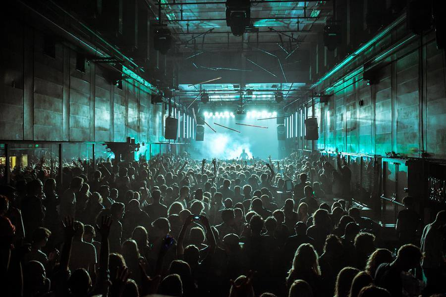
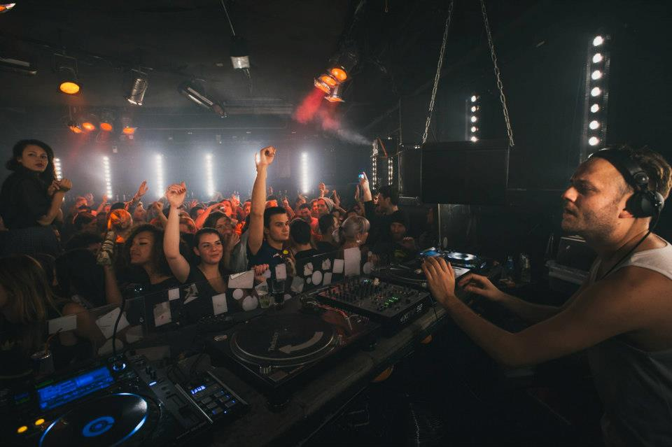

Groei van populariteit in de clubcultuur
De club als tegenruimte. Een vrije plek waar iedereen zichzelf kan zijn en verveling van de werkweek achter zich kan laten. Steden wereldwijd hebben een nachtcultuur opgebouwd. Sinds house en techno een plek hebben opgeëist in de clubcultuur. Het is een commerciële activiteit geworden waar mensen geld aan verdienen en dat is ook te zien aan de wildgroei van festivals afgelopen jaren. Dit hoeft niet slecht te zijn, uiteindelijk is het belangrijk dat de muziek blijft leven als artiesten ook geld verdienen. Alleen is het belangrijk dat de community niet vergeten wordt en dat het van belang is dat het kapitalistisch mindset ondergeschikt blijft. De Coronapandemie heeft aangetoond dat je de clubcultuur niet kan negeren, anders zullen er illegale raves plaatsvinden zoals het vroeger altijd heeft gedaan. De clubs die hieronder genoemd worden zijn een kleine selectie, maar niet representatief voor de landschap aan clubs die er wijdverbreid zijn.
Clubs in Amsterdam in het verleden
RoXY
RoXY was van 1987 tot 1999 een club in Amsterdam, een van de bekendste clubs van in Amsterdam en internationaal.
Het stond bekend om de theatrale en extravagante uitstraling. De club werd opgericht door Arjen Schrama, DJ Eddy de Clercq en kunstenaar Peter Giele. De club was in het centrum van Amsterdam aan het Singel.
In de jaren 90 was club RoXY samen me de iT en de De Waakzaamheid een van de belangrijkste clubs van de house-en technoscen in Nederland. RoXY begon in 1987 toen de elektronische house- en techno muziek langzaam doorsijpelde in Nederland via Groot-Brittanië. In de nasleep van de disco beweging ontstond uit het as de house muziek en kwam ook in Nederland aan.
Het begon als een internationaal. Het stond bekend om de theatrale en extravagante uitstraling. De club werd opgericht door Arjen Schrama, DJ Eddy de Clercq en kunstenaar Peter Giele. De club was in het centrum van Amsterdam aan het Singel. In de jaren 90 was club RoXY samen me de iT en de De Waakzaamheid een van de belangrijkste clubs van de house-en technoscen in Nederland. RoXY begon in 1987 toen de elektronische house- en techno muziek langzaam doorsijpelde in Nederland via Groot-Brittanië. In de nasleep van de disco beweging ontstond uit het as de house muziek en kwam ook in Nederland aan. Het begon als een alternatieve club voor kunstenaars, andersdenkenden en iedereen die maar niet pastte in heteronormatieve maatschappij. Eddy de Clercq zag de houserevolutie in het buitenland en wilde deze ook naar Nederland brengen, dit wilde in het begin niet lukken. De elektronische muziek beviel veel bezoekers niet en het sloeg maar niet aan bij het grote publiek. Tussen juli en augustus 1988 moest de club zich bewijzen na tegenvallende cijfers, anders viel het doek voor de club. Hoe de doorbraak uiteindelijk ontstond, daar verschillen de meningen over, maar door combinatie van de opkomst van de drug XTC en de groei van populariteit van elektronisch droegen hieraan bij. Daarna ontstonden er rijen tot aan de Munt bioscoop. Het deurbeleid was algemeen bekend met de selectiviteit en dit zorgde voor de extatische sfeer binnen. Het werd vaak als willekeurig omschreven, alhoewel mensen met een lidmaatschap altijd toegelaten werden. De sfeer zorgde er ook voor dat je binnen gemakkelijk drugs kon nemen zonder met schuine ogen bekeken te worden. In de jaren 90 was de RoXY een van de belangrijkste clubs wereldwijd, en de club ving de tijdsgeest op precies het juiste moment. Het bleef een belangrijk club tot een brand in 1999 een einde maakte aan de club. De invloed op de toekomstige clubs was daarna groot, het was een blauwdruk die daarna vaak werd afgekeken.
iT
iT werd op 7 september 1989 geopend door Manfred Langer. Na RoXY, wilde Manfred een club oprichten die extravaganter was en meer gericht was op het gay publiek. De club stond bekend om het uitgedoste publiek met kinky outfits en less is more. Het hetero publiek was ook wel welkom, maar aan de deur werd bepaald of je er wel of niet in mocht komen. De club stond ook wel bekend om de leather parties en mannelijke strippers. Er kwam ook veel bekend publiek af op dit interessante fenomeen in Amsterdam waar het altijd nog gekker kon. Thema-avonden waren er ook gasten verkleed kwamen. De uitstraling van de club zorgde voor veel publiciteit en zorgde voor de naamsbekendheid.
Club 11
Club 11 zit nog in het recente verleden van Amsterdam, het was gevestigd in het voormalig hoofdkantoor van PTT op Oosterdokseiland. Daarna werd het een broedplaats voor culturele evenementen en kunstenaars. Op 13 mei 2004 werd club 11 opgericht. Eigenaren van 11 waren dj, chefkoks en cultureel ondernemers: Lex Breet, Brian Boswijk, Sander Overeinder, Jaymz Pool en Koen Vollaers. De muziekprogrammeur Olaf Boswijk zou later een vervolg geven aan deze club maar daar vertellen we straks meer over. Vanaf het begin was het duidelijk dat het een tijdelijk ruimte zou zijn en het concept was hierop aangepast. In het landschap van de nachtcultuur begon de afname van aanbod. Zo kwam het voor dat tijdelijke plaatsen werden opgericht en die creatieve ondernemers dan gebruikten om interessante concepten op te richten. Dit was het idee van Club 11. Zij waren de eerste die hiermee kwamen. Op de 11e verdieping was de restaurant-bar-club en het werd een succes. Er was goed nagedacht over de ruimte en hoe de club ook als restaurant fungeerde. Het uitzicht werkte natuurlijk ook mee. De befaamde club sloot de deuren met het concept van de 11 laatste dagen van club 11 in 2008 28 juni. Hierna ging een deel van de oprichters een nieuwe club oprichten die nog bekender zou worden…

Trouw
In navolging van Club 11 hadden de oprichters het oude gebouw van de krant Trouw een opvolger gevonden om een volgend hoofdstuk toe te voegen in de clubscene van Amsterdam. Wat de creatieve ondernemers hebben geleerd van Club 11 pasten ze toe in TrouwAmsterdam, alleen werd er inspiratie gevonden in de Berlijnse clubs en club Robert Johnson in Düsseldorf. De interieur werd ernaar gestileerd en zo werd er een trend gezet die later weer door andere clubs in Amsterdam werd overgenomen. Trouw werd ook de eerste club die van de gemeente Amsterdam een 24-uursvergunning toegewezen kreeg. Het nachtleven in Amsterdam kreeg een boost en werd ook wereldwijd weer op de kaart gezet.
Studio 80
De oprichting van Studio 80 in 2005 was opgezet als stichting om een creatief platform te bieden voor nieuwe elektronische muziek van eigen bodem. Het creatieve team van de 80 - Tessa Nijdam, Pieter Willems en Xander Koster zorgden voor een kweekvijver van Nederlandse dj’s die tot op de dag van vandaag nog steeds wereldwijd worden geboekt. Na Dick Koopman (2005 – 2007) en Gert van Veen (2008 – 2013) werd Tessa Nijdam de laatste programmeur. Programmeurs fungeren sinds 2000 een belangrijke creatieve richting van de club en daar wordt vaker de nadruk op gelegd. Opgezet door mede-eigenaar van ID&T Duncan Stutterheim, bekend van de grote festivals Sensation, Thunderdom en Mysteryland. Groot geworden door de housefeesten in de jaren 90 en de Nederlandse afsplitsing van de house, de gabberhousefeesten. De club stond samen met Club 11 en Sugar Factory symbool voor een nieuwe generatie clubs met een meer 'alternatieve' filosofie, die samenviel met de opkomst van de minimal-scene. Na het sluiten van Trouw eind 2014 bloeide de club weer op, en werd het de belangrijkste club van de stad.
Clubs in Amsterdam heden
Radion
Radion is geopend in september 2014 in Nieuw-West. Het gebouw is onderdeel van cultureel broedplaats ACTA. In een trend van tijdelijke broedplaatsen krijgt ACTA 10 jaar en daarna zal het moeten wijken voor nieuw-bouw. De mensen achter RADION zijn Staas Lucassen en Nadine Spronk, initiatiefnemers van het culturele platform Pand 14. Dit platform heeft een grote bijdrage geleverd aan de culturele 24-uurs beleving in Amsterdam Zuidoost. Wegens uitbreiding van de A9 heeft Pand 14 haar deuren toen moeten sluiten. Frits Zanen, Gijs Brands en Cees Zanen zijn ook betrokken bij RADION. Het streefde een breder publiek aan te boren met culturele evenementen voor jong en oud en wilde ook bedienen aan liefhebbers van elektronische muziek. Na een interview werd gezegd dat het geen vervanger van club Trouw wilde zijn. Met een rauwe en industriële uitstraling heeft het ook een ander DNA. De club is sinds de opening constant in ontwikkeling geweest, een jaar na de opening had het een tweede zaal geopend in een voormalig auditorium. Een jaar later kregen ze de gewilde 24-uurs vergunning waardoor ze voelden dat ze serieus meededen in het Amsterdams nachtleven. Met betonnen muren, verschillende ruimtes en een tuin kan je ronddwalen in de nachtelijke avontuur.
De school
Een club met een legendarisch voorloper moest gelijk vanaf het begin zijn naam waarmaken, De School. De School zit sinds 2016 in het van buiten ouderwetse gebouw waarop de geel-groen-paarse letters LTS nog herinneren aan de vorige functie van een techniek school..Een deel van de oprichters van de Trouw ging na de sluiting verder met een nieuwe tijdelijke locatie. De School is opgezet vanuit het bedrijf Post CS BV, dat eerder club 11 en Trouw begon. Ernst Mertens en Jochem Doornbusch zijn de eigenaren van De School. Olaf Boswijk, het brein achter Trouw, bleef als mede-eigenaar betrokken bij het project. De programmering blijft gedurfd elektronisch met talent van eigen grond en buitenland. De club deed zijn deuren open op 3 januari 2016 en met een tussentijdse sluiting in juni 2020 vanwege de pandemie, de financiële situatie en naar nu blijkt de "terechte kritiek" over het gebrek aan diversiteit. Dit heeft de club naderhand toegegeven. De communicatie tijdens de Black Lives Matter-protesten toen was niet handig aangepakt. In september 2022 is de club heropend en mag het nog tot januari 2024 doorgaan volgens de tijdelijke overeenkomst. Het Einde werd de laatste feest genoemd, op 12, 13, 14 en 15 januari werd de aflsuitweekend ingeluid. En online waren de kaartjes direct uitverkocht. De mensen die misgrepen moesten uiteindelijk aan de deur een kaartje kopen, talloze mensen hadden dezelfde gedachte en zo ontstond er een hele lang rij voor het oude LTS gebouw die ongeveer 10 uur of langer duurde. Zie hieronder voor een weergave van een deel van de rij op zondagmiddag 14 januari 2024.

Garage Noord
Een plekje in Noord, Garage Noord werd geopend in 2017 en heeft ook een tijdelijke bestemming als club net als de buren, Skatecafé. In Noord zijn met de deze clubs en wat andere leuke tentjes al een aantal jaar een van de leukste plekken Amsterdam. Alleen gaan we het nu hebben over Garage Noord, die een vreemde eend in de bijt was. De programmering is altijd avontuurlijk en experimenteel, wat mensen wegjaagt of aantrekt en dat is altijd spannend. Zoals de naam al zegt, lijkt het op een garage en pasten er in het begin hooguit 150 man in, na wat verbouwingen tijdens de pandemie is de capaciteit verhoogd. De rauwheid spat ervan af en dat maakt dit lelijk eendje toch wel aantrekkelijk. Kortgeleden is het contract met de gemeente voor nog 3 jaar verlengd en dus kan de Amsterdammer nog in Noord terecht voor een elektronisch begeleid dansje.
Levenslang
Plekken aan de rafelranden van Amsterdam, dat is eigenlijk het motto van het nachtleven van de afgelopen 10 jaar. Als je hierheen komt, dan weet je waar je naar op zoek bent. Jules Oostendorp, met Thomas Oostdijk eigenaar van Brouwerij de Eeuwige Jeugd, van Café de Jeugd en nu ook van Brouwclub Levenslang. De naam verwijst naar het voormalige ketelhuis van de Bijlmerbajes, waar brouwerij, restaurant en nachtclub zijn gevestigd. De clubnachten worden geprogrammeerd door een bekende in het nachtleven van Amsterdam, van de label Slapfunk Records, Nelson Yogh. De club bestaat bijna een jaar en heeft al veel plannen. Zodra De School zijn deuren sluit in het begin volgend jaar 2024, hebben we al misschien een waardige opvolger.
Lofi
Lofi Amsterdam is gevestigd in een oude busgarage in Amsterdam West die getransformeerd is tot club. In oktober 2019 opende de club zijn deuren voor het publiek. Buiten heeft Lofi een buitenplaats die wordt afgeschermd met grote zeecontainers. Binnen heeft Lofi twee industriële binnenruimtes met grote deuren, hoge plafonds en rauwe afwerkingen. Hierdoor sluit Lofi naadloos aan bij het industriële Sloterdijk. De programmering wordt hier ook gedaan door Nelson Yogh en Samuel Taselaar. Hier vind je de meest uiteenlopende clubnachten.
Clubs in Berlijn
Berghain
Als we het over Berghain hebben, dan weet elke clubveteraan wel waar het over gaat, een van werelds bekendste clubs van de elektronische muziek. Met name de harde bonkende techno die door de muren van de voormalige elektriciteitscentrale bonkt en waar de zweet van het plafond druppelt. De club Berghain is ontstaan uit de voormalige Berlijnse technoclub Ostgut. Ostgut was een van de eerste vaste plekken waar fetish- en gayfeesten werden georganiseerd: zogenaamde Snax evenementen, op 6 Januari 2003 vond de laatste partyavond in Ostgut plaats. Daarna werd er gezocht naar een nieuwe plek. De club is opgericht in 2004 door vrienden Norbert Thormann en Michael Teufele. Er kan veel gezegd worden over de club, van de strenge deurbeleid tot de extreem kinky avonden die club organiseert voor het gay publiek, maar nu is het ook inclusiever naar queer publiek. De bekende no photo policy is algemeen bekend en als je de heilige zaal binnentreedt begrijp je waarom veel mensen dit een van de beste clubs ter wereld vinden. De blauwdruk van de club is ook vaak nagedaan door vele clubs in Amsterdam.
RSO
RSO.Berlin is de opvolger van de techno club Griessmuehle, gelegen nabij het S-Bahnstation Schöneweide. Deze werd geopend op 18 maart 2022 en met een capaciteit voor alleen 200 man is dit een intieme club waar je veel vooruitstrevende namen hoort van de techno scene. Persoonlijk ben ik bij Griessmuehle geweest, maar nog niet bij de opvolger en ben heel erg benieuwd naar de club ruimte.
Sisyphos
Deze club zit in een voormalige hondenkoekjesfabriek en is iets verder buiten de stad dan de andere clubs, maar ook zeker de moeite waard.De Sisyphos ligt 2 kilometer oostelijk van Station Ostkreuz. De club is te herkennen aan de beroemde ingang met de twee eenden (zie foto). Het is meteen herkenbaar wanneer er een feest gaande is want dan staat er meestal een rij van meerdere honderden meters. De Sisyphos staat ook bekend om zijn open-airs en extreem lange feesten. Zo kunnen feestjes wel een paar dagen doorgaan, maar dat is in Berlijn geen uitzondering.
Club der Visionäre
Deze klein club ligt direct aan het water dat loopt tussen het Landwehrkanal en de rivier de Spree. Open vanaf de middag zonder officiële sluitingstijd, dit is een geweldige plek om een nacht feesten te beginnen of te eindigen met het kijken naar de zonsondergang of de zonsopgang. Dj's worden vaak geboekt een week of twee van tevoren. De sfeer is relaxt en kan uiteenlopend van rustig tot een bruisend energie met veel dansend publiek.
Voor volgende week neem ik jullie mee naar een aantal clubs in het Oosten van Europa.